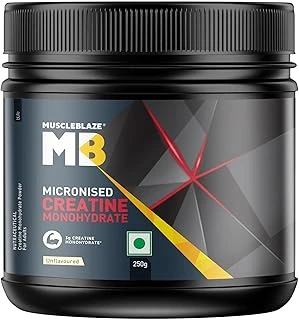
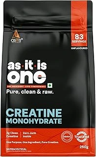
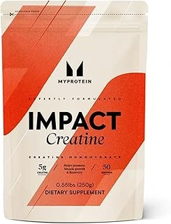
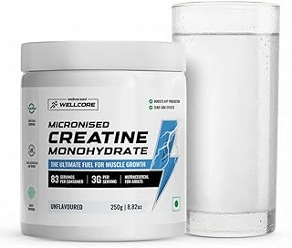

Best Creatine for Beginners (2026 Buying Guide)
Creatine is one of the most researched and effective fitness supplements for improving strength, workout performance, recovery, and lean muscle growth. It is especially popular among gym beginners because it helps improve workout intensity and muscle energy naturally.
However, many beginners get confused while choosing between different creatine brands available online. Some products offer better purity, easier mixing, and better value for money than others.
In this guide, we researched top-rated creatine supplements in India based on purity, effectiveness, beginner-friendliness, brand reputation, mixing quality, and real customer reviews.
💡 Beginner Tips Before Buying Creatine
- Start with 3–5g creatine daily for beginners.
- Creatine monohydrate is the best and most researched form.
- Drink enough water throughout the day while using creatine.
- Consistency matters more than loading phases.
- Creatine works best when combined with proper workout and diet.
👉 Here are our top 5 best creatine supplements for beginners in India:
1. Optimum Nutrition Micronized Creatine Powder (Approx. ₹827) 🔥 Editor's Pick

⭐ Best Creatine Monohydrate for Beginners & Muscle Growth (2026)
Why We Picked It: If you're buying your first creatine, this is one of the safest choices. ON (Optimum Nutrition) has built a strong reputation worldwide for quality supplements, and this micronized creatine keeps things simple—just pure creatine monohydrate with no unnecessary additives. Most users report better strength, improved workout performance, and easier mixing compared to many budget options. It may not be the cheapest creatine available, but it delivers reliable results and peace of mind.
- ✔ 100% pure creatine monohydrate with no fillers
- ✔ Micronized texture mixes smoother than many regular creatines
- ✔ Helps increase strength, power, and workout performance
- ✔ Trusted international brand with strong quality control
- ✔ Unflavored formula can be added to protein shakes or juice easily
- ✔ Great choice for beginners who want proven results without gimmicks
- ❌ Unflavored taste may not appeal to users who prefer flavored supplements
2. MuscleBlaze Creatine Monohydrate (Approx. ₹999)

⭐ Best Indian Creatine Monohydrate for Strength & Muscle Gain (2026)
Why We Picked It: MuscleBlaze has become one of the most trusted fitness brands in India, and this creatine is a solid choice for beginners and regular gym-goers alike. It delivers the same proven creatine monohydrate formula used by premium international brands and has become one of the most popular creatine supplements among Indian fitness enthusiasts. Many users report noticeable improvements in workout performance, strength, and training intensity after consistent use.
- ✔ 100% pure creatine monohydrate formula with no unnecessary fillers
- ✔ Helps improve strength, power, and high-intensity workout performance
- ✔ Trusted Indian fitness brand with strong market reputation
- ✔ Good mixability and easy to add to water, juice, or protein shakes
- ✔ Widely used by beginners as well as experienced gym-goers
- ✔ Easily available online and often backed by authenticity verification
- ❌ Requires consistent daily use before full results become noticeable
3. AS-IT-IS Nutrition Creatine Monohydrate (Approx. ₹517)

⭐ Best Budget Creatine Monohydrate for Muscle Gain (2026)
Why We Picked It: AS-IT-IS Nutrition Creatine is one of the most affordable ways to start using creatine without compromising on the core ingredient. Many gym beginners and students choose it because it focuses on pure creatine monohydrate rather than flashy marketing. If your goal is to improve strength and workout performance while keeping costs low, this supplement offers excellent value.
- ✔ One of the most affordable creatine supplements available in India
- ✔ 100% creatine monohydrate with no unnecessary additives
- ✔ Helps improve strength, power, and workout performance
- ✔ Excellent choice for students and budget-conscious beginners
- ✔ Unflavored formula can be mixed with water, juice, or protein shakes
- ✔ Great value for users who want pure creatine at the lowest possible cost
- ❌ Mixability is not as smooth as some premium micronized creatine products
4. MyProtein Creatine Monohydrate (Approx. ₹949)

⭐ Best Imported Creatine Monohydrate for Beginners (2026)
Why We Picked It: MyProtein is a well-known international supplement brand trusted by fitness enthusiasts worldwide. This creatine is popular for its clean formula, reliable quality, and consistent results. Many users choose it because they want a straightforward imported creatine from a brand with a strong reputation in the fitness industry.
- ✔ Pure creatine monohydrate formula with no unnecessary ingredients
- ✔ Trusted international supplement brand used worldwide
- ✔ Helps improve strength, power, and gym performance
- ✔ Fine powder texture mixes reasonably well in shakes and water
- ✔ Unflavored formula works easily with protein shakes and juices
- ✔ Popular choice among intermediate and experienced gym-goers
- ❌ Mixability is good but may leave slight residue if not shaken properly
- ❌ Packaging and serving scoop may vary between batches
5. Wellcore Micronised Creatine Monohydrate (Approx. ₹999)

⭐ Best Micronized Creatine for Easy Mixing (2026)
Why We Picked It: Wellcore has gained attention among Indian fitness enthusiasts for offering a clean micronized creatine formula that mixes better than many basic creatine powders. Users often mention its smooth texture and easy digestion during daily use. If you want a straightforward creatine from a growing fitness brand, Wellcore is a solid option for improving strength and workout performance.
- ✔ Micronized creatine formula mixes smoothly in water and shakes
- ✔ Helps improve strength, power, and high-intensity workout performance
- ✔ Clean formula with no unnecessary fillers or additives
- ✔ Easy to include in a daily supplement routine
- ✔ Many users report less grittiness compared to regular creatine powders
- ✔ Suitable for beginners as well as experienced gym-goers
- ❌ Newer brand with a shorter track record than established global competitors
📘 Best Creatine for Beginners (2026 Buying Guide)
- ✔ Creatine monohydrate is the safest and most researched creatine type.
- ✔ Beginners usually need only 3–5g daily.
- ✔ Micronized creatine mixes better in water.
- ✔ Buy only from trusted sellers to avoid fake supplements.
- ✔ Consistent daily use works better than random loading cycles.
- ✔ Beginners should focus on workout consistency along with supplements.
- ✔ Creatine works best with proper hydration and sleep.
❓ Top 5 FAQs About Creatine for Beginners
-
1. Is creatine safe for beginners?
Yes, creatine monohydrate is one of the safest and most researched fitness supplements. -
2. How much creatine should beginners take?
Most beginners use 3–5g creatine daily. -
3. Does creatine help muscle gain?
Yes, creatine helps improve workout strength and supports lean muscle growth. -
4. When should beginners take creatine?
Creatine can be taken before or after workouts consistently every day. -
5. Do I need a loading phase?
No, beginners can simply start with a regular daily dose.
Why Trust Us?
- ✔ We compare real user reviews from Amazon & fitness communities
- ✔ Products are selected based on quality, digestion, and value
- ✔ No paid placements or fake rankings
- ✔ Lists are updated regularly based on ratings & market trends